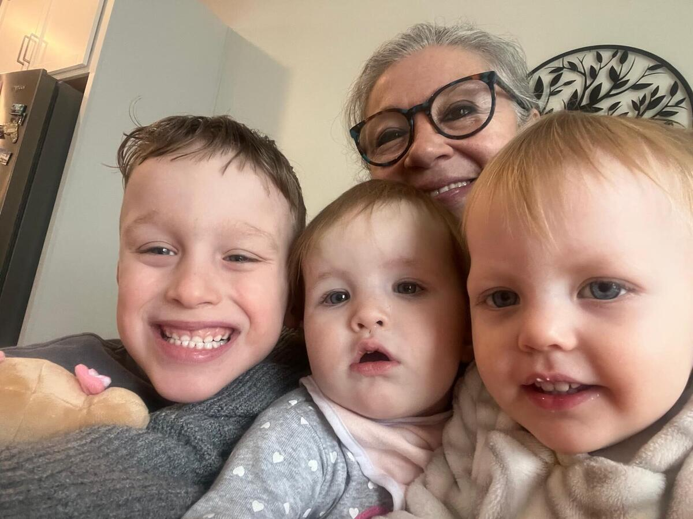
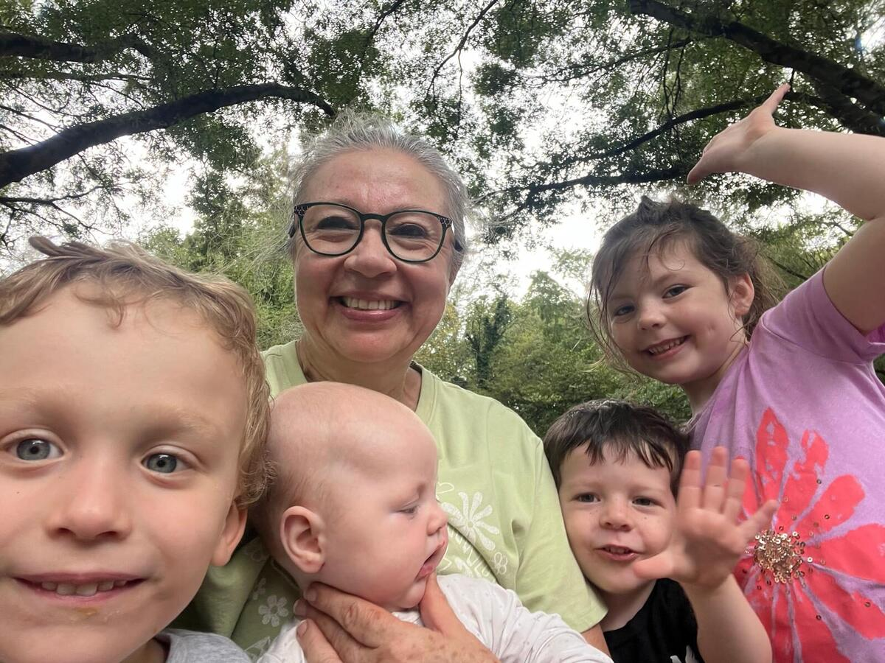
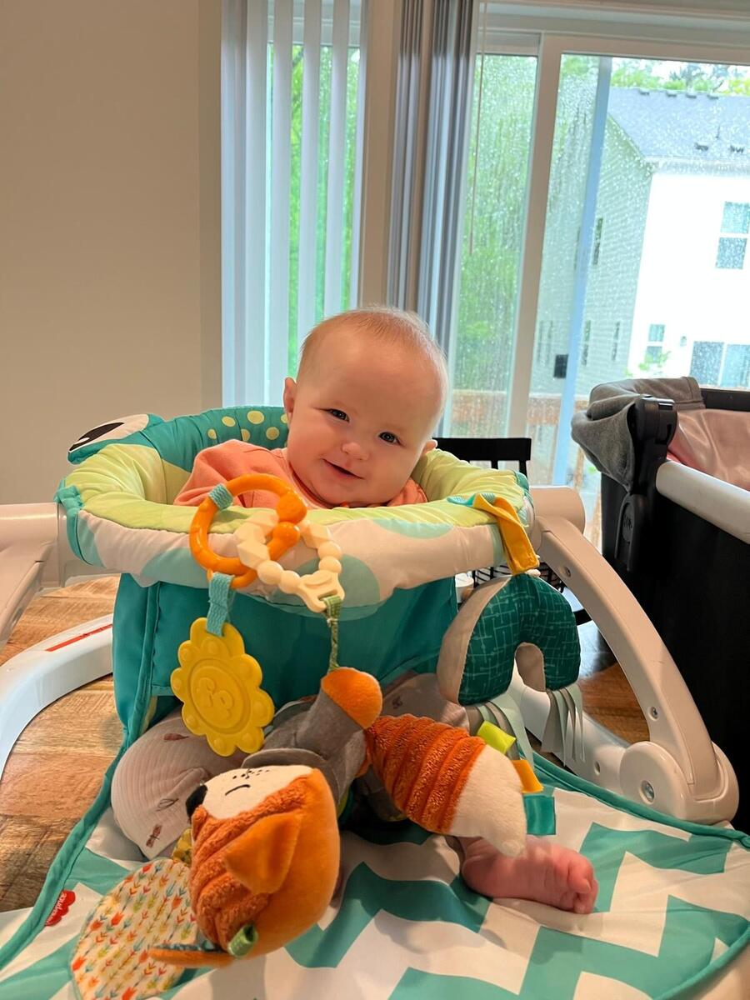
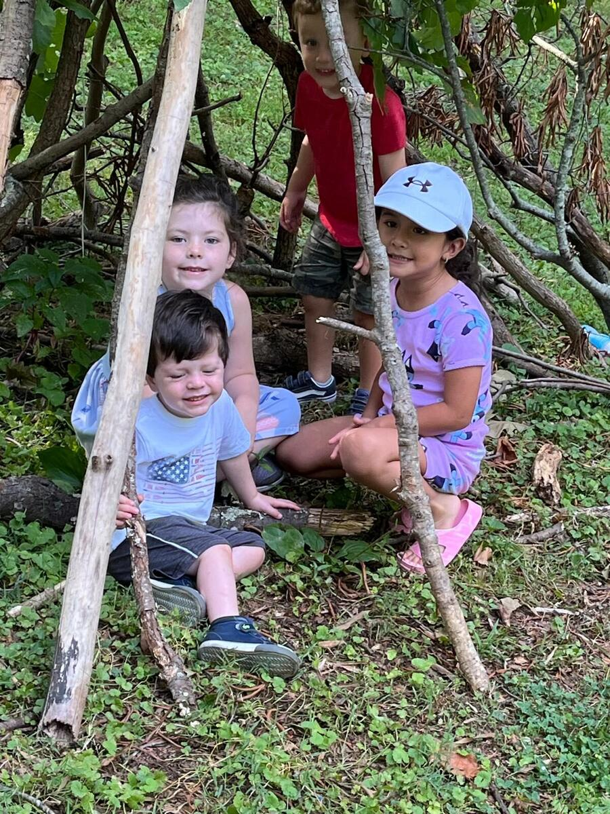
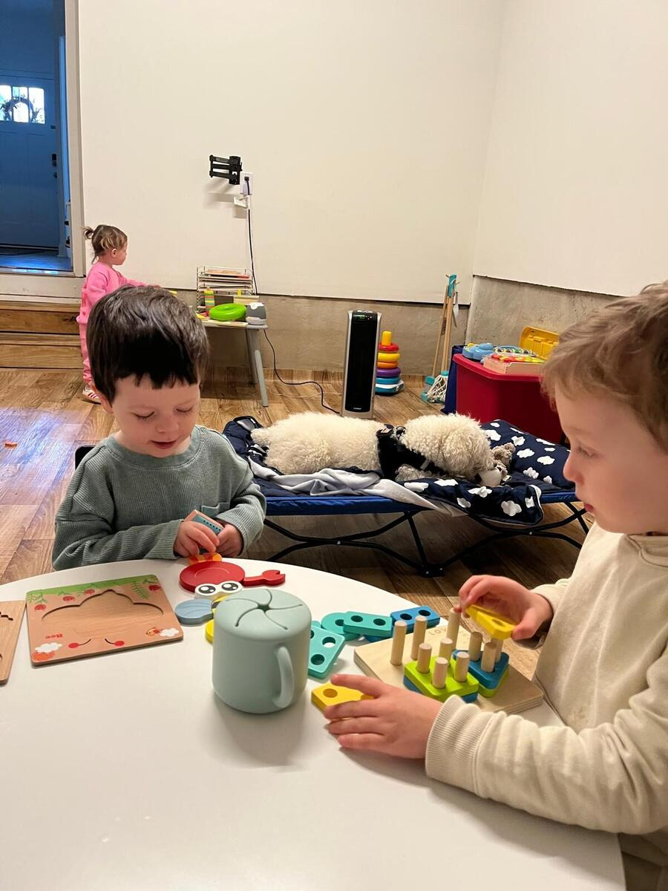
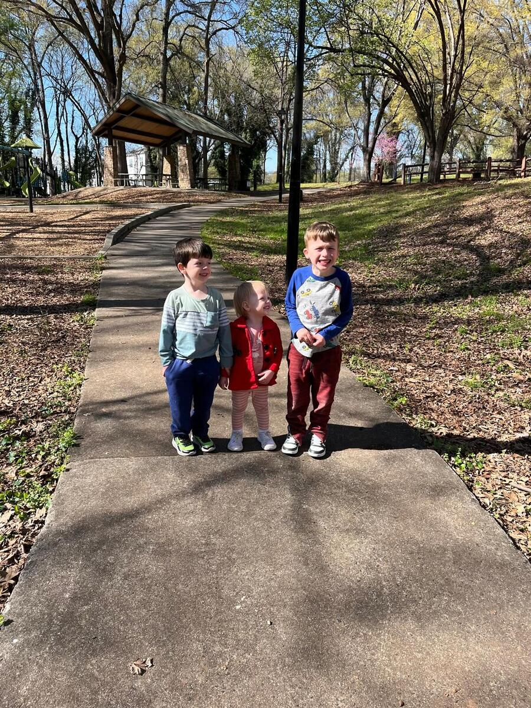
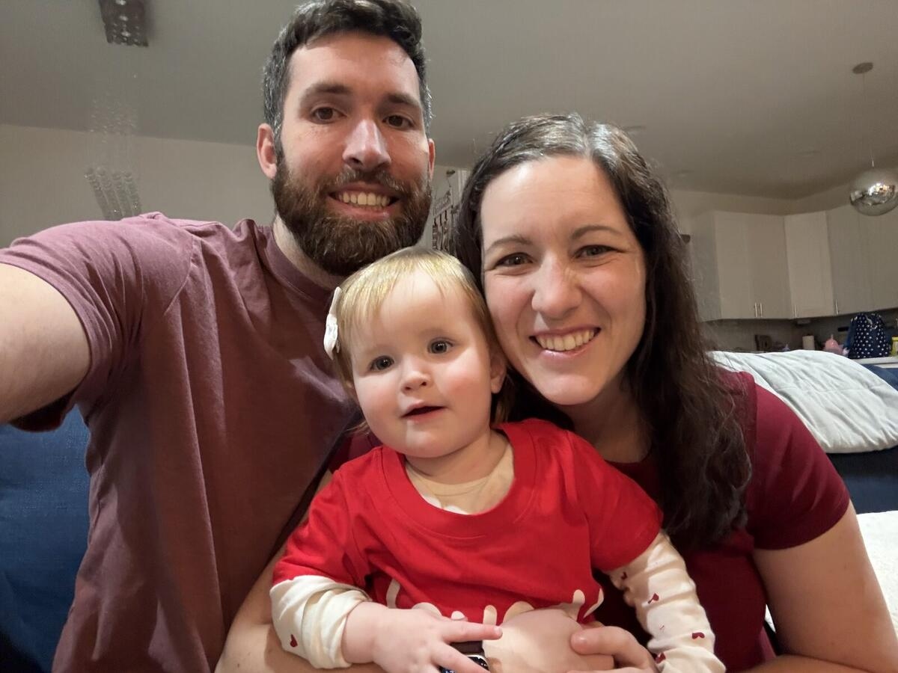

Consistent care
The same trusted caregiver each morning — no rotating staff or crowded rooms.
Bilingual home childcare • Charlotte, NC
Warm, bilingual care in a real home — with one familiar caregiver and Spanish from your child’s very first day.
Schedule a visit


Meet Isabel
Isabel personally cares for every child, creating a steady rhythm where little ones feel known, safe and loved. Days include play, fresh meals, outdoor adventures and Spanish spoken naturally.
— Isabel
Our approach · Nuestro enfoque
The same trusted caregiver each morning — no rotating staff or crowded rooms.
Greetings, songs, stories, meals and play make Spanish natural and pressure-free.
Friendships and confidence without getting lost in a large daycare setting.
Age-appropriate meals and snacks with allergies and family guidance in mind.
A day with Isabel
A predictable rhythm helps children feel secure while balancing learning, movement, nourishment, rest and connection.



From hello to see you tomorrow
A calm welcome, family check-in and free play.
A balanced meal with Spanish woven into conversation.
Greetings, songs, weather, movement and early learning.
Sensory activities, art, books, building and exploration.
Walks, park time or outdoor play when conditions allow.
A fresh, balanced meal adapted to age and allergies.
A quiet transition to naps or calm activities.
A nutritious snack, stories, music and social play.
A personal update about meals, rest, mood and the day.
Nutrition · Alimentación
Meals use fresh ingredients with fruits or vegetables, protein, grains and age-appropriate textures. Isabel follows family instructions for allergies, sensitivities and feeding stages.
Kind words

“Isabel has been an amazing child care provider. We love that our daughter is exposed to Spanish and plays with other children without being in a large daycare setting.”
“She became family. She is dependable, nurturing, patient, and truly has a gift for connecting with children.”
Let’s meet · Conozcámonos
This website is for parents and legal guardians. Contact Isabel personally to discuss availability and arrange a visit.